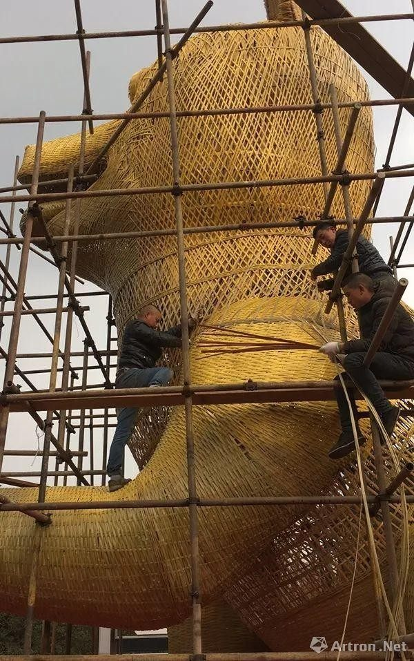

Craft
非遗技艺 · 图文分点详解
01
蜀绣 · 中国四大名绣
蜀绣与苏绣、湘绣、粤绣并称「中国四大名绣」。它以软缎、彩丝为主要原料，针法多达百余种，题材多为花鸟虫鱼、山水人物。针脚工整平齐、色彩明丽生动，被誉为「东方艺术明珠」。
- 针法丰富：晕针、铺针、滚针等122种针法
- 代表作品：双面绣、鲤鱼图、芙蓉锦鸡
- 国家级遗存：2006年列入首批国家级非遗名录

02
川剧 · 变脸吐火绝技
川剧是四川地方戏曲的代表，唱腔高亢激越、表演诙谐生动。其绝活「变脸」能在须臾之间变换十数张脸谱，吐火则令人目不暇接，被誉为「蜀中一绝」，展现了蜀地人民豪爽乐观的性格。
- 变脸：扯、揉、吹、贴四大技法，弹指间换脸
- 吐火：口喷烈焰，惊险刺激的压轴绝活
- 五腔共和：昆、高、胡、弹、灯五种声腔并立

03
道明竹编 · 指间的匠心
崇州道明竹编有上千年的历史，以慈竹为材、细密精巧见长。从生活器物到艺术陈设，一件件竹器承载着匠人对自然的敬畏与生活的热爱，是「竹编之乡」最生动的注脚。
- 细密竹丝：竹篾细如发丝，编织温润如玉
- 生活美学：竹篮、竹灯、竹饰，实用与审美兼具
- 非遗新生：与国际设计师联名，走向当代生活